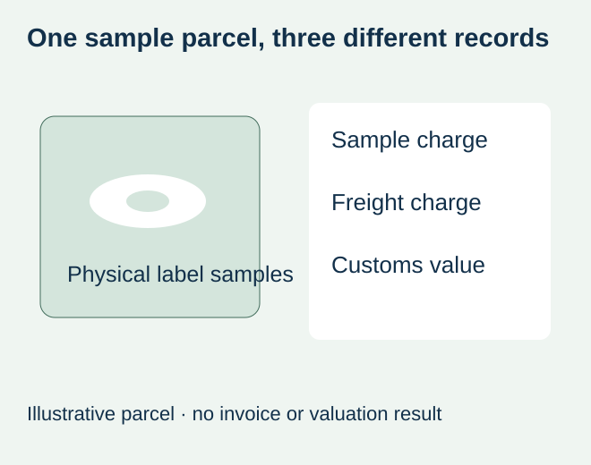
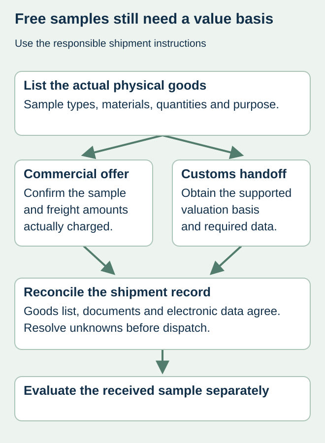

A buyer requests physical food-label samples before choosing a material. The supplier agrees not to charge for the samples, so the draft shipping paperwork says zero value. A carrier then asks what the goods are and how their declared value was determined. The sample offer and the customs declaration were answering different questions.
Keep the price charged to the buyer separate from the value required for customs purposes. Obtain the actual carrier or broker instructions for the destination, describe the physical goods accurately and use a supported valuation basis. Do not automatically enter zero, invent a token amount or label commercial goods as a gift to avoid the question.


First establish what will cross the border
An emailed PDF proof is different from a parcel containing printed paper labels, film labels, swatches or an actual bottle. List the physical items and quantities. If a sample packet contains several constructions, preserve enough detail for the responsible shipper to describe them. Calling the parcel “documents” does not make physical product samples into correspondence.
DHL Express’s customs questions guide identifies goods type, value, quantity, classification, origin and shipper/receiver information as customs inputs. Its invoice guidance explains that accurate declared-value information supports the customs declaration. Ask the responsible carrier or broker how a no-sale sample should be valued and documented for the actual destination; no exemption or valuation formula is supplied here.
Separate three amounts in the sample request
| Amount or record | What to confirm | Do not substitute |
|---|---|---|
| Sample charge | Whether the supplier charges for the actual offered items | An assumption that every sample request is free |
| Freight charge | Actual dispatch service and confirmed included/excluded charges | A website sample statement treated as free shipping |
| Customs value | Supported value and basis required for the shipment | Zero solely because the buyer paid nothing |
| Import obligations | Responsible recipient/import arrangement and applicable charges | “Sample” treated as a universal tax exemption |
| Purpose | Honest evaluation purpose and any requested statement | A false gift or document description |


Ask the shipper for one consistent evidence set
Before dispatch, compare the item list, invoice or other required document, electronic shipment data and receiving details. The responsible shipper should retain the supported value basis and any destination-specific instructions. Where an input is unknown, obtain clarification rather than copying a number from a previous unrelated parcel.
For a hypothetical juice-label project, a packet may contain paper and film constructions for appearance comparison. Another shipment may include production-representative labels that will be applied to bottles. Their purposes, contents and values should be described as actually agreed. Neither is automatically an approved material or a finished-label performance result merely because the packet clears customs.
Keep evaluation and import release separate
Customs clearance allows the shipment to proceed under the relevant process; it does not establish that the sample suits a chilled bottle or food-contact use. Identify each received construction and the decision it can support. The proof-scope guide distinguishes content, physical appearance and production-material evidence.
Confirm who receives the parcel and who can respond if the carrier asks for information. If the actual sample or dispatch scope changes, update its documents before sending it. A delay caused by an unresolved value or description should remain visible in the sampling schedule rather than being reported as a completed physical-sample delivery.
The practical purchasing result is a confirmed sample offer and an accurate shipment handoff. This site does not promise universal free samples, freight, duty relief or customs-clearance services. Those terms must be confirmed for the proposed label project.
Discuss the unresolved label requirement
Identify the sample types, physical quantities, origin and destination, proposed dispatch arrangement and which fees are actually confirmed. Confirm sample availability and customs handling for the specific project. Prepare a label specification inquiry. The contact page opens an email draft and lists email or WhatsApp for attachments. Supply, proof options, testing, pricing and timing require project confirmation.